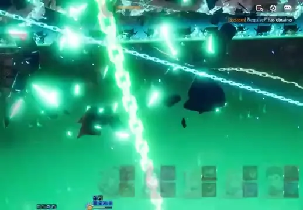

Shadow Kyle — 2 hero Awakening 44-48 lượt
KiChi Frame · 5,5N lượt xem · 30/06/2026 — Dùng 2 hero Awakening (Dellons 48 lượt và Fai 44-48 lượt), rotation chi tiết ghim ở bình luận.
Xem video ↗Video hướng dẫn đánh Destructive Shadow Kyle — xem đội hình và cách đánh chi tiết trong video.
Đạt 6M điểm, hướng dẫn rotation và gear — Phase 1 Shane DPS, Phase 2 Bai Long DPS.
Video: Xem trên YouTube ↗
3 bài viết

KiChi Frame · 5,5N lượt xem · 30/06/2026 — Dùng 2 hero Awakening (Dellons 48 lượt và Fai 44-48 lượt), rotation chi tiết ghim ở bình luận.
Xem video ↗
7KDreamer Plays · 5,1N lượt xem · 8 tháng trước — So sánh đội hình Kyle cập nhật: Bai Long T12 đấu Shane T12, xem nên dùng DPS nào.
Xem video ↗
Luminesensi · 1,5N lượt xem · 8 tháng trước — Gameplay đạt 6.000.000 điểm trong 69 lượt, trình diễn đội hình và rotation kỹ năng.
Xem video ↗